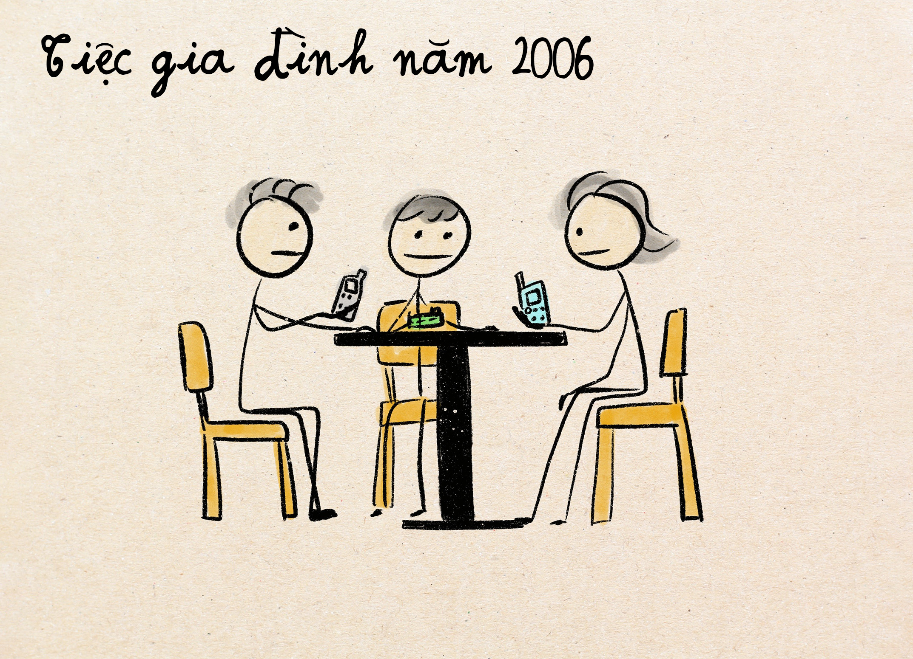
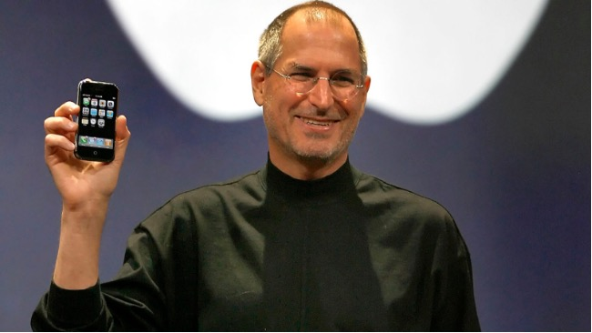
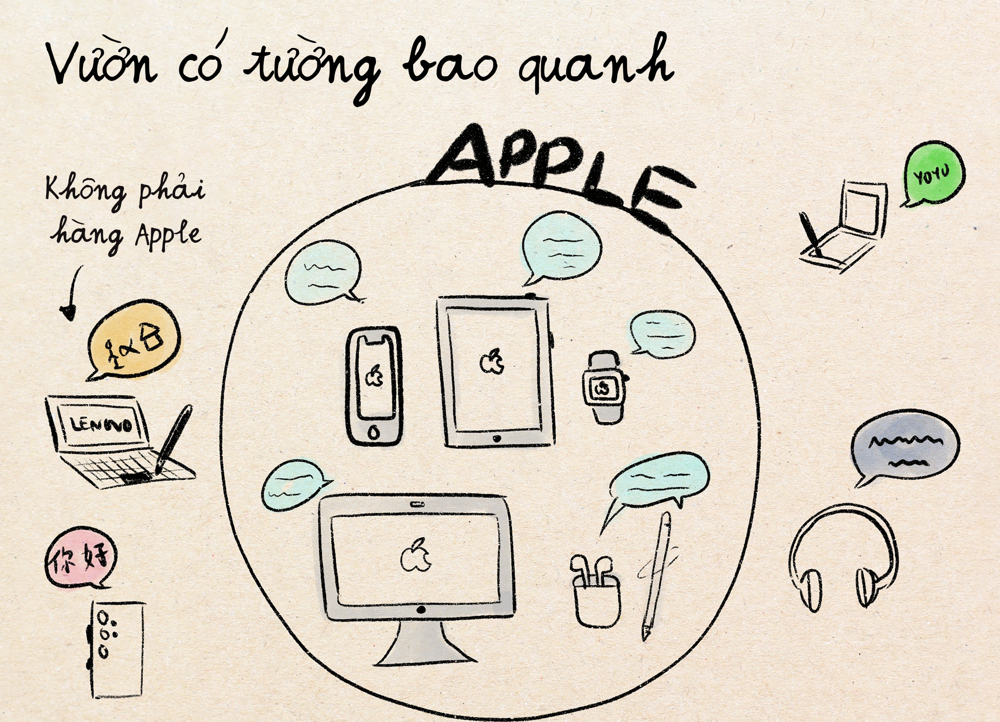
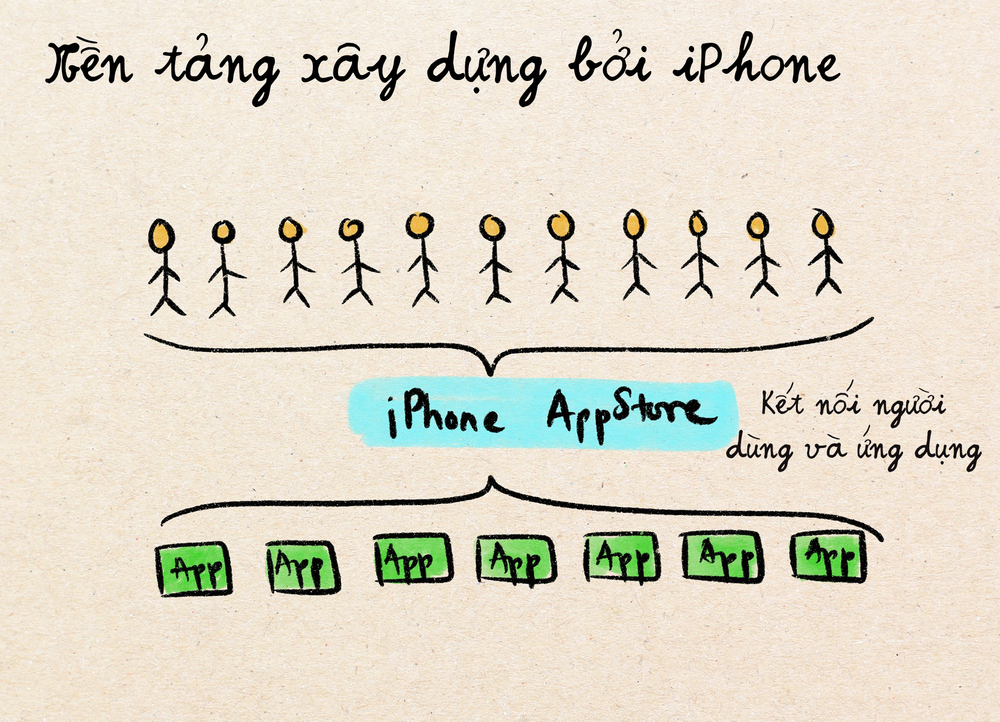
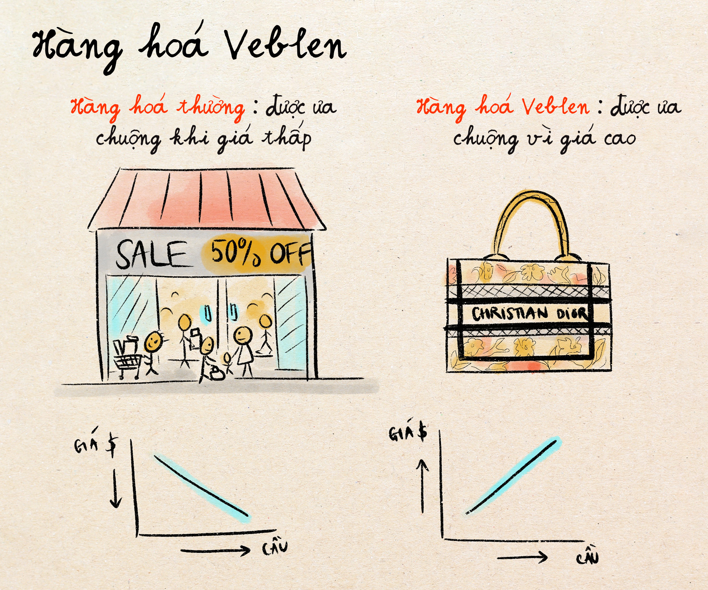
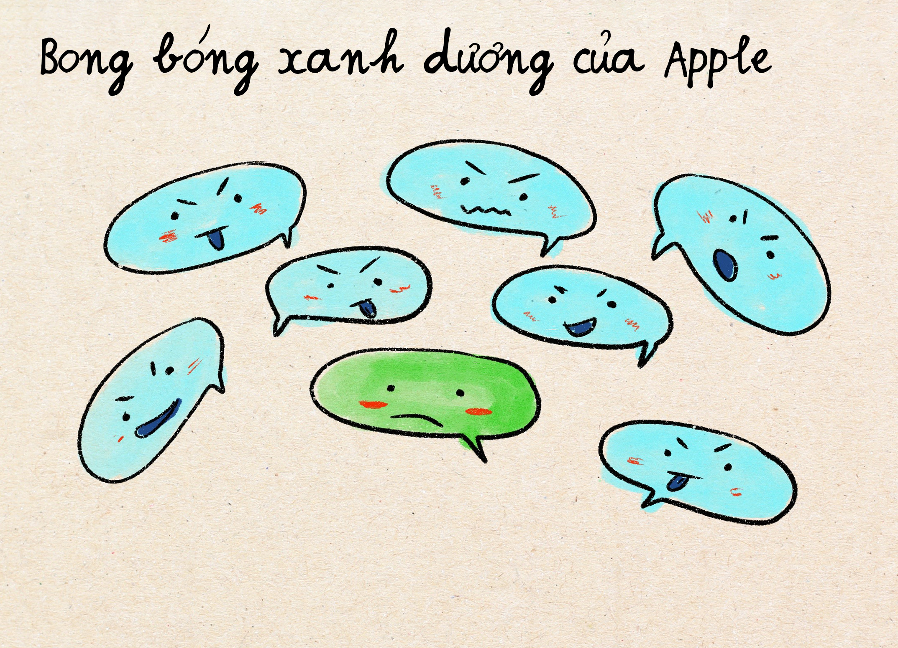
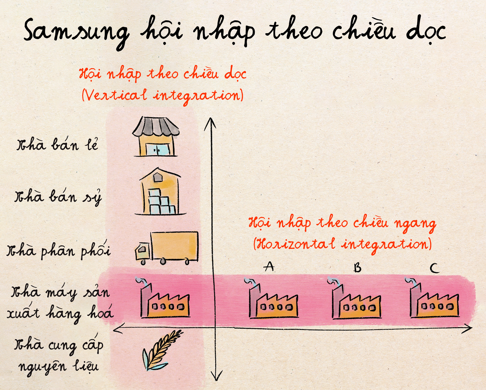
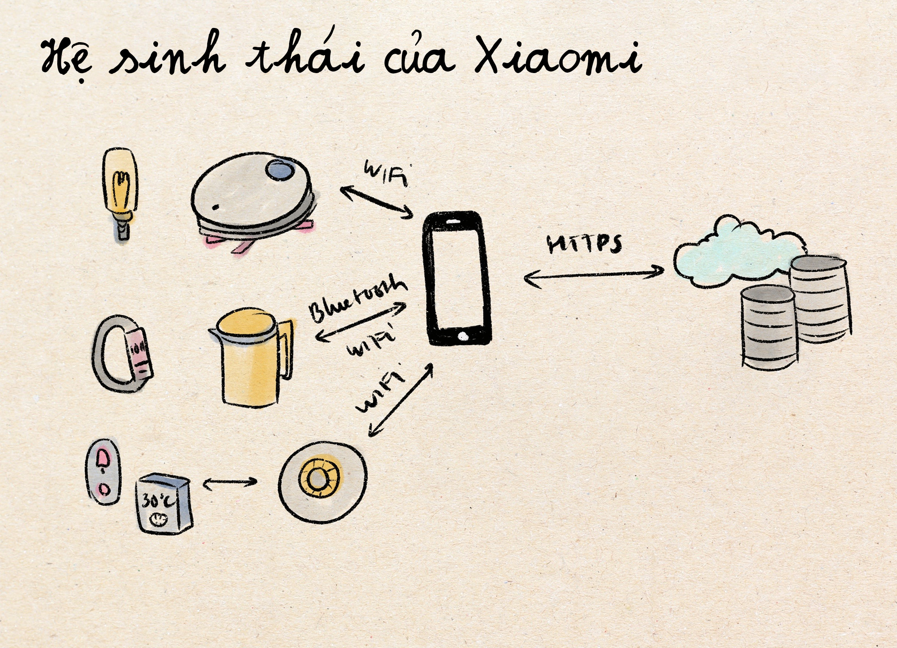
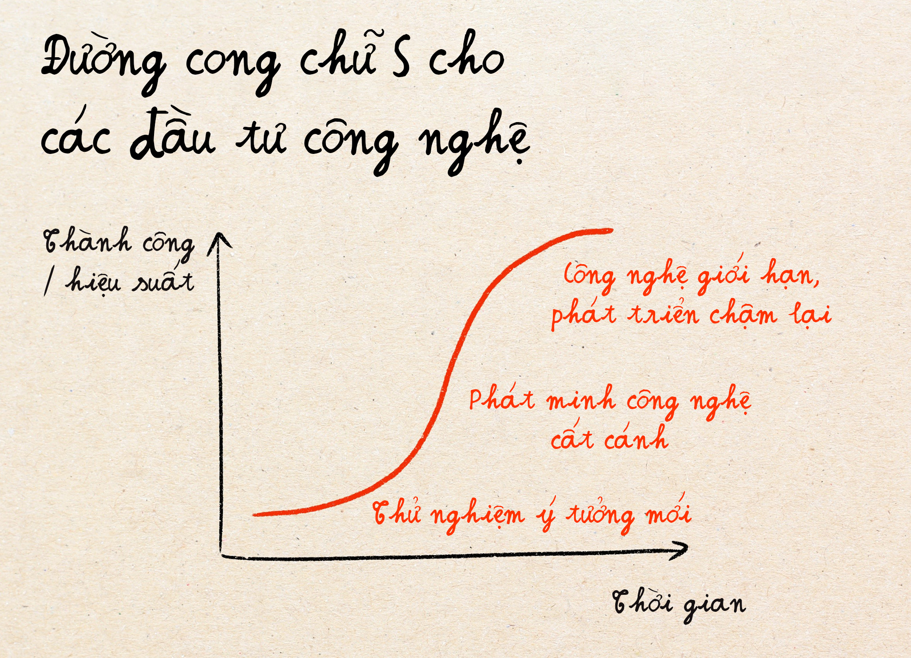

Cuộc Chiến Smartphone của Ba Gã Khổng Lồ
Tưởng tượng khung cảnh năm 2006 khi bạn đang dự một bữa tiệc gia đình. Mọi người thi nhau khoe điện thoại. Anh họ thì cầm chiếc Nokia 3310 huyền thoại – thứ có thể sống sót qua thảm họa hạt nhân mà vẫn còn pin để chơi. Ông chú thì mải mê gõ trên chiếc BlackBerry với bàn phím bé xíu kêu tách tách như chim gõ kiến đập đá. Bà dì thì lôi ra chiếc Motorola Razr sành điệu, tự hào vì điện thoại còn mỏng như eo của siêu mẫu.
Không ai trong bữa tiệc đó có thể ngờ rằng chỉ trong vòng 5 năm, tất cả các nhãn hàng điện thoại này sẽ trở thành lịch sử trong ngành điện thoại, và cuộc chiến điện thoại thực sự sẽ xảy ra giữa một công ty táo cắn dở (Apple), một tập đoàn Hàn Quốc (Samsung), và một khởi nghiệp Trung Quốc (Xiaomi) mà phần lớn bên Tây chưa từng nghe tên.
Chương 1: Apple Thả Bom Nguyên Tử Vào Ngành Điện Thoại (2007)
Trước năm 2007 khi iPhone chưa ra đời
Thị trường công nghiệp điện thoại giống như một hệ thống bang hội thời trung cổ. Mỗi hãng đã vạch sẵn lãnh địa riêng và bằng lòng trị vì lãnh thổ đó. Nokia là vị hoàng đế nắm giữ 40% thị phần toàn cầu với những chiếc điện thoại bền như xe tăng. Bạn có thể làm rơi chúng từ cầu thang, lấy xe đạp cán qua, và chúng vẫn chạy ngon lành.
BlackBerry thì thống trị tuyệt đối giới doanh nhân đến mức người ta gọi nó là "CrackBerry" (crack là một loại thuốc khiến người ta nghiện) – vì các sếp không thể nào rời tay khỏi nó. BlackBerry cho phép doanh nhân kiểm tra được email trên điện thoại. Nghe thì thường nhưng vào thời điểm đó, ý tưởng này cực mới và sáng tạo.
Motorola là vua thời trang với chiếc Razr siêu mỏng. Palm thì chiếm lĩnh nhóm người mê tăng năng suất (productivity) với một hệ thống chữ viết dùng bút stylus.
Ai cũng hài lòng. Ai cũng có làn đường riêng.

iPhone thay đổi kỳ vọng của khách hàng trong tích tắc
Ngày 9 tháng 1 năm 2007. Steve Jobs bước lên sân khấu trong chiếc áo cổ lọ đen đặc trưng và bắt đầu bài thuyết trình: "Hôm nay, chúng tôi giới thiệu ba sản phẩm mang tính cách mạng..."
Ông dừng lại để tạo kịch tính, như ảo thuật gia David Copperfield sắp làm biến mất Tượng Nữ Thần Tự Do.
"Một iPod màn hình rộng điều khiển bằng cảm ứng... một điện thoại di động cách mạng hoá... và một thiết bị liên lạc qua internet đột phá. Nhưng đây không phải là ba thiết bị riêng biệt; chúng nằm trong một thiết bị. Và chúng tôi gọi nó là... iPhone."
iPhone không chỉ là một đối thủ cạnh tranh – nó khiến các điện thoại khác trông như công cụ thời đồ đá. Nó không chỉ nâng tiêu chuẩn điện thoại, mà phóng tiêu chuẩn đó lên không trung luôn. Cùng điểm qua 4 tính năng và phát minh mới của iPhone đã thay đổi hoàn toàn tiêu chuẩn điện thoại di động lúc bấy giờ nhé!
Phát minh 1: Bỏ đi nút bấm bàn phím
Trước năm 2007, bàn phím của BlackBerry được yêu thích và sử dụng nhiều đến mức có người còn bị triệu chứng "ngón tay cái BlackBerry" – một dạng chấn thương do gõ quá nhiều trên những phím bé tí. Nokia thì phát triển hệ thống gõ T9, công nghệ dự đoán bạn đang gõ gì từ bàn phím chỉ có 9 phím. Họ hoàn chỉnh công nghệ này đến mức bạn có thể bấm "hello" bằng cách nhấn 4-3-5-5-6. Lúc đó, ai cũng tin rằng người dùng cần có cảm giác bàn phím thật thì mới gõ chính xác được.

Khi Apple tung ra iPhone, họ cũng giới thiệu bàn phím ảo / cảm ứng, ngon hơn bàn phím thật. Cái hay là bàn phím này có thể biến hoá nhanh chóng từ bàn phím QWERTY như dùng máy tính thông thường, đến bàn phím số, lúc lại chuyển thành emoji hay ký tự tiếng Nhật, Trung, v.v. Giống như bạn đang cầm một con dao đa năng Thụy Sĩ. Bằng cách loại bỏ bàn phím vật lý, Apple trả lại cho bạn nửa màn hình điện thoại vì màn hình không còn bị bàn phím chiếm gần hết chỗ nữa.
Phát minh 2: Truy cập Internet bằng điện thoại
Trướng iPhone, một số điện thoại cũng có internet, nhưng phần lớn là trình duyệt WAP: thô sơ, chậm chạp, khó nhìn và khó dùng. Phần lớn mạng lúc đó chỉ dùng chữ, và đọc như menu nhà hàng: "Chào mừng đến CNN Mobile. Nhấn 1 để xem tin tức. Nhấn 2 để xem thể thao. Nhấn 3 để xem thời tiết."
Ngược lại, Apple lại mang Internet hoàn chỉnh đến điệt thoại. Trang web có đầy đủ hình ảnh, bố cục, chức năng hệt như khi trên máy tính. Và người dùng có thể phóng to thu nhỏ trang bằng cảm ứng tay chụm lại hay mở ra. Trải nghiệm lướt web này khiến mọi trình duyệt khác bỗng trở nên cồng kềnh và cổ lổ sỹ.
Phát minh 3: Cửa hàng ứng dụng điện thoại (App Store)
Trước iPhone thì việc cài phần mềm trên điện thoại rất mất công: Bạn phải tìm phiên bản phù hợp đúng model điện thoại, tải phần mềm về máy tính, cắm dây nối điện thoại, rồi niệm thần chú hy vọng các vị thần công nghệ hôm đó đang vui vẻ và cho phần mềm chạy một cách ô kê. Mà phần mềm có chạy được thì giao diện cũng thường rất chán.
Apple tung ra App Store là một chợ / cửa hàng ứng dụng điện thoại mà bất kỳ ai dù không biết kỹ thuật cũng có thể tìm và cài đặt được bằng một nút ấn. App Store là một phát minh khiến cả thị trường phần mềm thay đổi – nó tạo ra một nền kinh tế mới. "Nhà phát triển ứng dụng" bỗng trở thành một nghề nghiêm túc kiếm được tiền. Nhờ có nó mà những ứng dụng như Angry Bird (kiếm được 200 triệu đô), Instagram, và Facebook mới có nền tảng phát triển.
Phát minh 4: Dân chủ hoá công nghệ
Công nghệ điện thoại trước iPhone có cảm giác như làm cho kỹ sư. Dùng điện thoại di động giống như lái tàu vũ trụ: menu lằng nhằng, tuỳ chọn khó hiểu. Người dùng còn phải tự nhập cấu hình email, cài driver để đồng bộ dữ liệu, khởi động máy lại mỗi khi ứng dụng bị treo, và mang theo pin dự phòng vì chẳng biết lúc nào máy sẽ lăn ra chết.
Triết lý thiết kế của Apple thì khác hoàn toàn: họ tạo ra điện thoại mà đến cả ông bà già hàng xóm cũng dùng được mà không cần nhờ ai hướng dẫn và không cần phải là một kỹ thuật viên. Apple kiểm soát trọn bộ trải nghiệm từ phần cứng, phần mềm đến dịch vụ. Ứng dụng nào mà có vấn đề nhiều sẽ bị loại ngay ra khỏi app store. Giao diện cũng thân thuộc hơn: Ảnh trông như album thật thay vì trông giống như danh sách file trong một tệp file trên máy tính; Âm nhạc có bìa đĩa như ngoài đời; Danh bạ thì giống sổ tay, v.v.
Tất cả những điều này nghe thì bình thường, nhưng vào thời điểm đó – nó là một cuộc cách mạng.
Lý do thực sự vì sao thế hệ điện thoại cũ thất bại
Điều thú vị là dưới góc độ kinh doanh, Nokia không thất bại vì dại chiến lược hay lười biếng. Họ đã làm đúng mọi thứ theo logic kinh doanh thông thường: tập trung phát triển những thứ mà họ giỏi. CEO của Nokia, Stephen Elop, từng có câu phát biểu nổi tiếng vào năm 2011: "Chúng tôi không làm gì sai, nhưng không hiểu bằng cách nào đó, chúng tôi đã thua trận chiến điện thoại."
Đôi khi, chính việc bạn tiếp tục làm những gì bạn giỏi lại là lý do khiến bạn diệt vong. Đây được gọi là nghịch lý của những nhà phát minh đổi mới (Innovator Dilemma). Nokia giống như một công ty đã dành hàng thập kỷ để hoàn thiện nghệ thuật làm xe ngựa. Họ có những con ngựa tốt nhất, chỗ ngồi êm nhất, bánh xe mượt nhất, và những cỗ xe ngựa đáng tin cậy nhất. Khách hàng yêu quý họ. Lợi nhuận khủng. Mọi thứ đều đang rất tuyệt. Cho đến lúc có người phát minh ra ô tô.

Trong khi đó, Apple lại tối ưu cho những gì người dùng chưa biết là mình muốn: một chiếc máy tính dưới vỏ bọc điện thoại. Apple không cố gắng tạo ra một chiếc điện thoại tốt hơn mà tập trung tạo ra một sản phẩm hoàn toàn khác.
Kết quả cho thấy sự thảm khốc của những nhãn hàng không theo kịp xu hướng điện thoại mới. Nokia từng trị giá 303 tỷ đô phải bán cho Microsoft với giá 7,2 tỷ. BlackBerry từng chiếm 50% thị phần smartphone ở Mỹ xuống còn dưới 1%. Motorola thì bị chia nhỏ và bán như hàng tháo kho. Palm bị HP mua về và âm thầm xoá tên khỏi thị trường.
Nhưng có một công ty không chỉ sống sót khi iPhone ra đời, mà còn phát triển rực rỡ với một chiến lược khác lạ; công ty này mang tên Samsung. Trong chương 3, ta sẽ đi sâu vào phân tích chiến lược của Samsung. Nhưng trước hết, cùng nhau đào sâu hơn các chiến lược kinh doanh của Apple nào.
Chương 2: 3 chiến lược kinh doanh chính của Apple (2007-2025)
Chiến lược 1: Khu vườn có tường bao quanh (Walled Garden)
Mục tiêu lớn nhất của Apple là tạo ra sản phẩm với chất lượng tuyệt vời nhất, ở mức độ mà người dùng cũng không thể tưởng tượng tốt hơn được. Họ muốn kiểm soát toàn bộ trải nghiệm để không có gì có thể sai sót hoặc không hoàn thiện. Nhưng tất cả trải nghiệm mượt mà này chỉ nằm gói gọn trong hệ thống thiết bị và dịch vụ của Apple. Ví dụ:
- Ảnh bạn nằm trong iCloud, sau khi chụp hình trên iPhone bạn có thể xem ngay lập tức trên Mac hoặc gửi file bằng Airdrop giữa các thiết bị của Apple một cách nhanh chóng. Nhưng để di chuyển ảnh sang các thiết bị không phải của Apple thường khó hơn rất nhiều, đôi khi với chất lượng giảm hẳn.
- Tin nhắn trong iMessage có thể được đồng bộ ngay lập tức giữa iPhone, iPad và Mac, nhưng chỉ có thể gửi và nhận trên các thiết bị của Apple. Khi nhắn tin với người không dùng Apple, hệ thống sẽ chuyển sang SMS/MMS thông thường và mất đi nhiều tính năng tốt khác. iMessage là dịch vụ nhắn tin bảo mật qua internet, trong khi SMS là tin nhắn truyền thống sử dụng mạng di động. iMessage cung cấp nhiều tính năng hơn như mã hóa thông tin, có ảnh độ phân giải cao hơn, v.v.
Tuy nhiên, chiến lược "vườn tường bao" cũng khiến người dùng khó chuyển sang các nền tảng khác vì dữ liệu và trải nghiệm đã được tối ưu hóa cho hệ sinh thái Apple. Nhiều tính năng chỉ hoạt động đầy đủ trên thiết bị Apple, và việc sử dụng các dịch vụ này trên thiết bị không phải của Apple thường bị hạn chế hoặc mất đi nhiều tiện ích. Điều này giúp Apple giữ chân khách hàng trong hệ sinh thái của mình, đồng thời cũng gây ra những tranh cãi về việc hạn chế lựa chọn và cạnh tranh trên thị trường. Chuyển sang Android đồng nghĩa với việc bạn phải xây dựng lại cả cuộc sống kỹ thuật số của mình — và việc đó chẳng khác gì chuyển nhà giữa cơn bão.
Điều này tạo ra cái mà các nhà kinh tế học gọi là "chi phí chuyển đổi" (switching cost) — nỗi đau khi rời đi lớn đến mức bạn sẽ chọn ở lại, ngay cả khi đối thủ có sản phẩm tốt hơn hoặc rẻ hơn. Apple không chỉ bán cho bạn một chiếc điện thoại, họ bán cho bạn quyền công dân trong "Cộng hòa Apple", với những đặc quyền chỉ hoạt động nếu bạn trung thành tuyệt đối.
Chiến lược 2: Từ bán Sản phẩm sang bán Nền tảng và Dịch vụ
Mô hình kinh doanh cũ thì đơn giản: sản xuất điện thoại, bán điện thoại, thu tiền, lặp lại.
Mô hình kinh doanh nền tảng và dịch vụ thì trông rất khác: sau khi mua điện thoại, khách hàng tải ứng dụng và Apple nhận 30% mỗi giao dịch trên Appstore. Khi khách đăng ký dịch vụ trong ứng dụng thì Apple lại bỏ túi tiếp 30% tiền hoa hồng. Lưu ảnh lên đám mây điện tử iCloud thì khách phải trả chi phí hàng tháng. Mua nhạc trên Apple Music thì cũng phải trả tiền, trả tiền bằng Apple Pay thì Apple cũng được các ngân hàng và nhà phát hành thẻ trả 0,15% giá trị giao dịch. Nói chung là điện thoại chỉ là một cái giá ban đầu, số tiền người dùng bỏ ra để sử dụng điện thoại, ứng dụng, và các dịch vụ liên quan khác là một khoản doanh thu khổng lồ khác chồng lên.
Về con số thu nhập: việc bán phần cứng (điện thoại) vẫn đem về khoảng 200 tỷ đô mỗi năm cho Apple, nhưng dịch vụ cũng mang lại số tiền đáng kể: App Store mang lại 78 tỷ mỗi năm chỉ từ việc lấy phần trăm giao dịch. Các dịch vụ như iCloud, Apple Music, Apple TV+ đóng góp thêm 68 tỷ nữa. Phụ kiện như AirPods thêm 38 tỷ. Ngay cả McDonald, một trong các chuỗi ăn nhanh hàng đầu thế giới, cũng có doanh thu thấp hơn doanh thu của các dịch vụ mà Apple bán ra. Nhìn chung, không một công ty nào trong số công ty phân tích trong bài viết này còn đơn thuần là "công ty điện thoại" nữa. Họ đều là những công ty nền tảng (platform), sử dụng chiếc điện thoại để kéo bạn vào và sau đó bạn phải trả tiền cho nhiều dịch vụ liên quan.
Tuyệt chiêu của chiến lược nền tảng đó là: càng dùng nhiều dịch vụ trên nền tảng thì bạn càng khó rời đi. Càng nhiều ảnh bạn lưu trên iCloud, việc chuyển sang Google Photos càng phiền. Càng nhiều app bạn mua trên App Store, bạn càng ngại chuyển sang Android. Càng nhiều playlist bạn tạo trên Apple Music, Spotify càng mất sức hút. Mỗi dịch vụ là một cái giếng sâu, càng đào xuống, càng khó trèo lên.
Sự phát triển của nền tảng Apple và mô hình kinh doanh trả tiền định kỳ (subscription) của dịch vụ Apple bán trên điện thoại iPhone đã trở thành hình mẫu cho nhiều công ty khác và thúc đẩy nền kinh tế Subscription. Với các công ty cung cấp dịch vụ như Apple, hay những công ty phát triển phần mềm, bán dịch vụ stream nhạc, lưu trữ hình ảnh online, v.v. thì chuyển sang lấy tiền dịch vụ thường tốt hơn cho công ty vì dòng tiền đi vào ổn định hơn. Tất nhiên nó cũng có nghĩa là dịch vụ phải liên tục tạo giá trị để giữ chân khách hàng.
Cái giá của nền kinh tế subscription (đăng ký & trả tiền định kỳ)
Khi mọi thứ trở thành dịch vụ, người dùng đánh mất một phần quyền kiểm soát cuộc sống số mà trước đây họ có. Bạn không sở hữu nhạc – Apple Music sở hữu. Bạn không sở hữu ảnh – chúng nằm trên đám mây điện tử của người khác. Bạn không sở hữu ứng dụng – bạn chỉ được cấp quyền sử dụng thôi.
Điều này tạo ra một dạng phụ thuộc mới. Khi bạn sở hữu đĩa nghe nhạc CD hay cuốn sách chẳng hạn thì bạn có thể nghe hay đọc nó mãi mãi. Nhưng khi bạn stream nhạc, bạn chỉ được nghe chừng nào còn trả tiền và dịch vụ vẫn còn hoạt động. Sự tiện lợi là thật, nhưng cái giá cũng là thật.
Chiến lược 3: Tối ưu hoá trải nghiệm bằng cách khai thác tâm lý khách hàng
Để bán cho khách hàng một chiếc điện thoại 1000 đô mà chỉ nhỉnh hơn cái điện thoại họ đang dùng một tí, thì Apple phải biết cách đánh vào tâm lý khách hàng và khiến họ đưa ra quyết định không hoàn toàn lý trí. Một số chiêu trò tâm lý mà Apple sử dụng bao gồm:
Chiến lược tâm lý học #1: Tín Hiệu Địa Vị
Với nhiều người, việc chọn điện thoại thường ít liên quan đến chức năng chính của nó như giao tiếp, nhắn tin, mà nhiều hơn ở việc thể hiện đẳng cấp và địa vị xã hội của họ với những người xung quanh. Một chiếc iPhone phát ra tín hiệu: "Tôi có thu nhập dư dả và trân trọng trải nghiệm cao cấp." Điện thoại Samsung Galaxy thì lại có tín hiệu: "Tôi thực tế và am hiểu công nghệ." Dù ta có thừa nhận hay không, những tín hiệu đó rất có trọng lượng trong xã hội.
Trong lý thuyết kinh tế, người ta gọi loại hàng hoá như iPhone là "hàng hóa Veblen" – những sản phẩm trở nên hấp dẫn hơn khi giá của chúng cao hơn. Một chiếc điện thoại 200 đô hoạt động hoàn hảo có thể lại kém hấp dẫn hơn với một số người so với chiếc điện thoại 1.000 đô chỉ tốt hơn chút đỉnh – vì cái đắt tiền phát ra tín hiệu địa vị mà cái rẻ không có.
Apple đã tinh thông nghệ thuật phát tín hiệu địa vị theo những cách vượt xa giá cả. Thiết kế đặc trưng của iPhone khiến người ta nhận ra ngay lập tức. Ngay cả trải nghiệm mua hàng ở các Apple Store với tường bằng kính sang trọng cũng được dàn dựng công phu và củng cố cảm giác rằng mua iPhone giống như gia nhập một câu lạc bộ độc quyền.
Chiến lược tâm lý học #2: Bong Bóng Xanh dương và Hiệu ứng mạng lưới (network effect)
Nếu bạn để ý, tin nhắn trên iPhone có sự phân biệt rõ ràng giữa iMessage (bong bóng màu xanh dương) và tin nhắn SMS/MMS thông thường (bong bóng màu xanh lá). Khi người dùng iPhone nhắn tin cho nhau, cuộc trò chuyện sẽ hiển thị dưới dạng bong bóng xanh dương, cho thấy họ đang sử dụng iMessage—dịch vụ nhắn tin qua internet được mã hóa của Apple với các tính năng nâng cao. Tuy nhiên, khi người dùng iPhone nhắn tin cho ai đó dùng Android hoặc thiết bị không phải của Apple, tin nhắn sẽ hiện dưới dạng bong bóng xanh lá, nghĩa là tin nhắn được gửi dưới dạng SMS hoặc MMS thông thường qua mạng di động, không có các tính năng nâng cao và bảo mật như iMessage.
Sự phân biệt màu sắc này đã trở thành một vấn đề xã hội đặc biệt ở Mỹ, nơi iMessage rất phổ biến trong giới trẻ. Bong bóng xanh lá có thể khiến người khác nhận ra đối phương không dùng iPhone, đôi khi dẫn đến sự kỳ thị hoặc tệ hơn, cá nhân đó bị loại khỏi các nhóm chat vì các tính năng nhóm và chất lượng hình ảnh/video bị giảm hẳn cho người không dùng iPhone. Apple khiến cho trải nghiệm của người không dùng iPhone kém đi rõ ràng tới mức họ cảm thấy hơi "nhục" trong đám bạn bè.
Các nhà phê bình cho rằng việc Apple cố ý tách biệt tin nhắn theo màu sắc như vậy càng củng cố chiến lược "vườn tường bao" và tạo áp lực khiến người dùng ở lại trong hệ sinh thái Apple để có trải nghiệm nhắn tin tốt nhất, hoặc phải chuyển sang dùng iPhone từ các hãng điện thoại khác để không bị kỳ thị. Đây chính là hiệu ứng mạng lưới (network effect), một trong những lợi thế cạnh tranh khủng khiếp nhất trong kinh doanh. Khi ai cũng có điện thoại iPhone, thì bạn cảm thấy áp lực lớn hơn - không có nó có nghĩa là bạn bị cô lập xã hội và kinh tế.
Chiến lược tâm lý học #3: Nghịch lý quá nhiều lựa chọn
Chiến lược của Samsung là ra mắt điện thoại ở mọi phân khúc giá, và mỗi loại có những tổ hợp tính năng khác nhau. Bước vào cửa hàng tìm điện thoại Samsung, bạn sẽ thấy S24, S24+, S24 Ultra, A54, A34, A14, M54, M34 và hàng đống mã nghe như số seri của robot. Mỗi cái khác nhau về kích thước màn hình, camera, bộ nhớ, giá cả. Nghe thì có vẻ là thiên đường lựa chọn, nhưng nó lại dẫn tới vấn đề "quá tải" cho người mua. Trong trường hợp này, nghiên cứu cho thấy con người thường ra quyết định mua tồi hơn – hoặc né tránh quyết định hoàn toàn.
Apple chọn chiến lược ngược lại: đơn giản hóa triệt để. Tại bất kỳ một thời điểm nào, họ chỉ bán khoảng 4–5 mẫu iPhone, mỗi cái có vị trí rõ ràng: mẫu giá rẻ cho người tiết kiệm, mẫu chuẩn cho số đông, mẫu Pro cho người mê camera, và Pro Max cho ai mê màn hình to. Kiến trúc lựa chọn đó giúp người dùng dễ quyết định thay vì bị choáng vì quá nhiều thông số để lựa chọn.
Chiến lược tâm lý học #4: Lạc hậu hoá điện thoại đời cũ
Mỗi mùa thu, sự kiện iPhone mới tung ra được tổ chức rất hoành tráng. Họ tạo cảm giác hồi hợp chờ đợi cho những "tính năng đột phá mới" được hé lộ, cũng như những ngày "mở hàng bán" khi người ta chờ hàng dài trước cửa. Những sự kiện này khiến người dùng cảm thấy chiếc điện thoại họ dùng hôm qua còn tuyệt vời, hôm nay đã không còn mốt nữa.
Hơn thế nữa, trong quá trình tung ra sản phẩm mới, Apple liên tục nhấn mạnh những tính năng và thiết kế mới hoặc màu sắc mới mặc dù đôi khi những thay đổi này khá nhỏ như viền camera hay chất liệu khung máy. Lý do là vì thay đổi kích thích cảm giác "mới lạ" (novelty bias) trong não bộ, tạo ra sự hưng phấn và thôi thúc người dùng muốn sở hữu sản phẩm mới nhất.
Chương 3: Samsung sống sót bằng cách… đầu hàng
Quay lại câu chuyện bên trên: Samsung là một trong hai công ty duy nhất không chỉ sống sót khi iPhone ra đời, mà còn phát triển rực rỡ. Trong khi các nhãn hàng khác tiếp tục tập trung vào những gì họ giỏi để chứng minh Apple sai, Samsung lại nhìn iPhone và nhận ra: "Hay! Để ta làm cái giống vậy xem sao". Cùng nhau điểm qua các chiến lược kinh doanh chính của Samsung nhé!
Chiến lược "Chọn đồng bọn"
Samsung lựa chọn chiến lược phát triển hơi khác để theo kịp Apple: Trong khi Apple dành nhiều năm để hoàn thiện hệ sinh thái khép kín của mình với hệ điều hành iOS của riêng, Samsung bắt tay với Google và đặt cược vào hệ điều hành Android. Đây là một quyết định lớn vì Android là một hệ điều hành mở, nên bất kỳ một nhà sản xuất nào ngoài Samsung cũng có thể dùng nó.
Chiến lược "Hội nhập theo chiều dọc"
Samsung còn có một vũ khí bí mật khác: họ là nhà sản xuất nhiều linh kiện cho iPhone – từ chip bộ nhớ tới màn hình, bộ xử lý, và cả pin. Và vì thế họ dễ dàng tạo ra phiên bản linh kiện riêng cho điện thoại của họ, với chất lượng ngang ngửa. Sự tích hợp từ giai đoạn đầu trong quá trình sản xuất linh kiện tới giai đoạn lắp ráp mặt hàng cuối trong tiếng anh được gọi là "Vertical integration" (hội nhập theo chiều dọc). Nó giúp Samsung trở nên linh hoạt và có kiểm soát tốt hơn chuỗi cung ứng của sản phẩm. Họ còn kiếm được thêm tiền khi đối thủ phải mua linh kiện từ họ nữa.
Chỉ trong 18 tháng, điện thoại Samsung chuyển mình sang thành những chiếc điện thoại thông minh trông gần như là iPhone. Lúc bị Apple kiện vì sao chép thì mọi thứ đã muộn, Samsung đã kịp thiết lập vị thế "đối thủ thay thế iPhone" trên nhiều thị trường mà người dùng muốn lựa chọn rẻ hơn hoặc khác biệt hơn.
Chiến lược "Cửa hàng bách hoá"
Một chiến lược khác của Samsung có thể được so sánh với việc điều hành một cửa hàng bách hóa: bán đủ mọi thứ, từ túi hiệu đắt giá đến áo thun bình dân. Triết lý của họ là: "Chúng tôi sẽ làm điện thoại cho tất cả mọi người, ở mọi mức giá, với mọi tính năng bất kỳ ai có thể cần."
Việc đa dạng hóa các dòng điện thoại của Samsung giúp họ vừa cạnh tranh được với Apple ở phân khúc cao cấp (dòng Galaxy S), vừa chiến đấu được với các hãng Trung Quốc trong phân khúc giá rẻ (dòng Galaxi A, M), lại vừa tạo ra những dòng sản phẩm hoàn toàn mới và khác hẳn đối thủ như điện thoại gập. Mô hình kinh doanh của Samsung chủ yếu là dựa trên số lượng bán ra và sự đa dạng mặt hàng. Mặc dù giá bán trung bình của Samsung chỉ khoảng 250 đô la, nhưng họ bù lại lợi nhuận thấp bằng quy mô khổng lồ. Samsung bán nhiều điện thoại trên toàn cầu hơn tất cả các công ty đối thủ khác.
Chiến lược "Lợi thế của người đi trước"
Cách Apple tiếp cận đổi mới giống như một đầu bếp bậc thầy: họ không bao giờ phục vụ món ăn nếu nó chưa đạt đến độ hoàn hảo. Apple hiếm khi là người đầu tiên đưa công nghệ mới ra thị trường, nhưng thường là người đầu tiên làm cho công nghệ đó hoạt động trơn tru và hoàn hảo nhất. Ví dụ:
- Màn hình cảm ứng đã có từ trước iPhone, nhưng Apple là người hoàn thiện giao diện cảm ứng chạm.
- Nhận diện khuôn mặt đã tồn tại trên Android trước Face ID, nhưng Apple khiến nó đủ an toàn để dùng cho thanh toán bằng nhận diện mặt.
- Sạc không dây đã phổ biến trong ngành trước khi Apple áp dụng, nhưng họ tập trung làm cho nó hoạt động mượt mà hơn.
Triết lý này khiến nhiều đối thủ của Apple phát điên, bởi Apple thường được ghi công là "phát minh" ra những công nghệ mà trên thực tế họ chỉ đơn giản là hoàn thiện những công nghệ đã có. Nhưng nhìn từ góc độ kinh doanh, đây là một chiến lược thông minh: để người khác ra phiên bản có lỗi và giúp thị trường quen với khái niệm công nghệ mới đó, rồi xuất hiện với phiên bản cuối cùng tiến bộ hơn mà khách hàng thực sự muốn sử dụng.
Chiến lược của Samsung đối lập hẳn với của Apple: họ tập trung ra mắt công nghệ mới liên tục ngay cả khi nó chưa hoàn hảo. Galaxy Note tiên phong cho dòng "phablet" với màn hình to bất thường vào thời điểm đó. Galaxy Fold giới thiệu điện thoại gập, dù còn nhiều vấn đề về độ bền. Camera của Samsung liên tục đẩy giới hạn về zoom và chụp thiếu sáng. Sự tích hợp bút S-Pen tạo ra cả một dòng điện thoại mới giúp tăng năng suất làm việc cho người dùng.
Nhờ vào chiến lược này, Samsung liên tục tạo ra các danh mục và loại kỹ thuật / tính năng mới buộc đối thủ phải chạy theo. Dù sản phẩm ban đầu có thể chưa hoàn hảo, họ vẫn thu được phản hồi thị trường và kinh nghiệm kỹ thuật, giúp cải thiện nhanh hơn những công ty chọn chờ đợi công nghệ "chín muồi."
Nhưng Samsung vẫn gặp nhiều khó khăn khi theo đuổi mô hình Nền tảng & dịch vụ
Samsung cũng đã cố tái tạo mô hình dịch vụ của Apple – nhưng họ gặp phải một trở ngại căn bản: họ không kiểm soát hệ điều hành Android. Android là sân chơi của Google – nghĩa là Google nắm quyền với Play Store (tương tự như AppStore của Apple), hệ thống thanh toán ví điện tử, công nghệ đám mây điện tử, và hầu hết các dịch vụ kiếm ra tiền.
Samsung có làm ra phiên bản riêng như Samsung Pay, Samsung Health, Samsung Cloud, Bixby – nhưng về bản chất thì vẫn là xây nhà trên đất người khác. Bạn có thể phục vụ khách hàng rất tốt, nhưng hạ tầng cốt lõi thì bạn không làm chủ. Đó là lý do doanh thu dịch vụ của Samsung chỉ bằng một phần nhỏ của Apple, dù họ bán nhiều điện thoại hơn. Họ đang chơi một trận chiến ngay trên sân nhà của Google, bằng vũ khí do Google cung cấp, và Google thì đâu có lý do gì để chia sẻ lợi nhuận khổng lồ này cho Samsung.
Chương 4: Xiaomi vào cuộc
Chiến lược "Dân chủ hoá" tột đỉnh
Cũng như một số công ty Trung Quốc ta đã phân tích trong những phần trước (Temu, Shein, etc.), chiến lược chủ chốt của Xiaomi là "dân chủ hoá các sản phẩm và tính năng cao cấp". Có nghĩa là thay vì sản xuất một cái điện thoại 1000 đô, công ty tạo ra một điện thoại với 90% trải nghiệm như vậy, nhưng chỉ với giá 300 đô. Để làm được điều này, họ tập trung vào tối ưu hoá một cách cực điểm: lấy những tính năng cao cấp của hai, ba năm trước (nên đã hơi cũ với hiện tại nhưng vẫn tốt và đủ với phần lớn người dùng), sản xuất với quy mô khổng lồ, bán trực tuyến để loại bỏ biên lợi nhuận của nhà bán lẻ trung gian, và chấp nhận lợi nhuận phần cứng bán ra cực thấp, bù lại là khối lượng bán khổng lồ. Đây giống như lấy công thức của một nhà hàng năm sao và tìm cách nấu nó ở nhà với chi phí bằng một phần mười.
Chiến lược này buộc các thương hiệu cao cấp phải biện minh cho mức giá của họ. Khi một chiếc Xiaomi 300 đô có những tính năng từng chỉ xuất hiện ở máy 1.000 đô, Apple và Samsung buộc phải giải thích vì sao sản phẩm của họ đáng giá đến vậy.
Chiến lược "Phát triển hệ sinh thái (ecosystem)" lớn hơn cả nền tảng của Apple
CEO Lei Jun của Xiaomi từng nói, "Chúng tôi là một công ty Internet tình cờ làm thêm phần cứng thôi." Nghe có vẻ như một câu nói sáo rỗng để marketing, nhưng thực tế đó là một chiến lược cực kỳ khôn ngoan. Xiaomi dùng điện thoại như sản phẩm mồi để thu hút người dùng vào hệ sinh thái, nơi họ sẽ mua các thể loại sản phẩm khác như TV thông minh, laptop, xe scooter điện, nồi cơm điện, robot hút bụi, máy lọc không khí và hơn 200 sản phẩm khác mà công ty tạo ra. Những sản phẩm này có thể "nói chuyện" được với nhau, tạo thành một hệ thống thông minh hoàn chỉnh.
Hơn thế nữa, Xiaomi cũng cung cấp các dịch vụ khác như Mi Store (cạnh tranh với Google Play), Mi Home để kết nối các thiết bị thông minh trong nhà, Mi Finance cung cấp dịch vụ ngân hàng và cho vay, Mi Video và Mi Music thì cạnh tranh với Netflix và Spotify.
Xiaomi tạo ra một cuộc chơi hoàn toàn khác: Trong khi Apple và Samsung đang chiến đấu để giành lợi nhuận từ việc bán phần cứng và các thiết bị liên quan, thì Xiaomi xây dựng hạ tầng để kiếm tiền từ người dùng trong suốt hành trình kỹ thuật số của họ với hàng trăm sản phẩm len lỏi vào cuộc sống thường ngày. Với Xiaomi, các thiết bị và phần cứng có thể kiếm ít lợi nhuận (họ gần như không có lời), nhưng tiền kiếm từ dịch vụ, phụ kiện và việc sử dụng nền tảng mới là khủng.
Hệ sinh thái thiết bị kết nối của Xiaomi tạo ra rào cản chuyển đổi (switching cost) giống Apple – nhưng ở mức giá bình dân hơn.
Chương 5: Tương lai của cuộc chiến là ở thị trường mới lên
Trong khi Apple và Samsung đấu tay đôi giành khách hàng cao cấp ở Mỹ và Châu Âu, cuộc chiến thực sự cho tương lai của điện thoại di động lại diễn ra tại những thành phố lớn tại các nước đang phát triển. Vì sao?
Các thị trường phương Tây chỉ có khoảng 1,2 tỷ người với phần lớn là đã sở hữu điện thoại. Trong khi đó, thị trường ở các nước đang phát triển có tới 5,8 tỷ người, phần lớn vẫn mới bắt đầu sử dụng những chiếc điện thoại đầu tiên và chưa có sự trung thành với bất cứ hãng nào. Những công ty thắng ở các thị trường mới này sẽ có được lòng trung thành của khách hàng trọn đời.
So với Samsung vào Xiaomi thì Apple đang đối mặt với một vấn đề nghiêm trọng ở các thị trường này. Ví dụ như ở Ấn Độ, thu nhập bình quân đầu người chỉ khoảng 2100 đô la mỗi năm, trong khi đó iPhone có giá từ 800-1200 đô. iPhone không chỉ đắt mà còn rất phi lý về mặt kinh tế. Để giải quyết vấn đề này, Apple tiếp tục bán các mẫu iPhone cũ với giá thấp hơn và cung cấp các biện pháp cho vay mua điện thoại, với hy vọng là người dùng sẽ nâng cấp lên các mẫu đắt tiền hơn khi thu nhập họ tăng lên. Tuy nhiên, khi các đối thủ cạnh tranh Samsung và Xiaomi nghiêm túc phát triển điện thoại phù hợp cho những thị trường đang lên này, chiến lược thụ động của Apple có khả năng không đủ mạnh để xây dựng lòng trung thành thương hiệu.
Samsung thành thạo thị trường đang phát triển
Thay vì bán các mô hình cũ như iPhone, Samsung thiết kế hàng loại series điện thoại cho khách hàng ở mọi mức thu nhập: Một chiếc Galaxy A32 có giá 250 đô la nhưng cảm giác như một chiếc điện thoại đáng giá 500 đô la. Galaxy M12 có giá 150 đô la nhưng pin "khủng" dùng được hai ngày. Galaxy A03 chỉ 100 đô la nhưng vẫn có thiết kế mới hiện đại. Đây là một chiến lược bậc thang, nơi khách hàng có thể leo từ phân khúc giá rẻ đến cao cấp mà vẫn ở lại trong hệ sinh thái của họ.
Ngoài ra, Samsung còn sử dụng chiến lược mở nhà máy lắp ráp tại địa phương, giúp giảm thuế nhập khẩu và tạo việc làm. Họ có thể sản xuất điện thoại ở một số quốc gia như Ấn Độ, Brazil và Việt Nam, vừa giảm chi phí đồng thời cải thiện quan hệ chính trị với các chính phủ địa phương.
Xiaomi cũng không kém cạnh
Xiaomi là thương hiệu điện thoại di động thông minh số một tại Ấn Độ, và cũng đang tăng trưởng nhanh ở châu Phi và Mỹ Latin. Họ tiếp tục tập trung không ngừng vào việc hạ giá thành dịch vụ từ đó nâng giá trị của điện thoại Xiaomi, thay vì len lỏi vào phân khúc người dùng có tiền, quan tâm tới địa vị.
Để giảm được giá thành, Xiaomi vẫn theo chiến lược bán hàng hoàn toàn online để không cần phải qua các nhà bán lẻ, ít dùng marketing TV đắt tiền mà dựa vào truyền miệng và mạng xã hội, ra mẫu mới liên tục để tạo sự mới mẻ, và sản xuất tại địa phương như Samsung để giảm thuế thu nhập và chi phí vận chuyển.
Chương 6: Tính năng điện thoại trong tương lai sẽ ít "choáng ngợp" hơn
Một điều đang dần trở thành hiện thực: những chiếc iPhone đời sau — kể cả iPhone 20 — có thể sẽ không còn tạo nên cảm giác "Wow!" như iPhone 4 từng làm. Không phải vì Apple cạn ý tưởng, mà vì một nguyên lý cơ bản trong quá trình đổi mới của công nghệ được gọi là: đường cong S. Nguyên lý này nói rằng: Mọi công nghệ đều tuân theo một chu trình hình chữ S. Giai đoạn đầu tiến bộ chậm vì ta còn đang tìm hiểu và xây dựng kỹ thuật cơ bản để làm bàn đà phát triển. Tiếp theo là giai đoạn tăng tốc, nơi cải tiến diễn ra cực nhanh. Nhưng càng về sau, mọi thứ càng khó và đắt đỏ để cải thiện thêm.
Lấy tốc độ ô tô làm ví dụ: từ 10 lên 50 dặp / giờ dễ hơn nhiều so với từ 200 lên 300. Khi đến gần giới hạn vật lý thì mọi bước tiến nhỏ đều tốn kém hơn rất nhiều.
Điện thoại cũng vậy. Từ iPhone đời đầu đến iPhone 4 là một bước nhảy vọt — màn hình đẹp hơn, chip mạnh hơn, camera bắt đầu ra hồn một tí. Nhưng từ iPhone 12 đến 15? Cải tiến chỉ là "tốt hơn một chút" mà thôi. Điện thoại di động hiện đã vào giai đoạn cuối của đường cong S. Màn hình đủ sắc nét. Chip xử lý đủ mạnh. Camera đủ tốt. Pin đủ dùng. Phần lớn nhu cầu cơ bản đã được đáp ứng.
Điều này dẫn đến hiện tượng "vượt quá hiệu suất" — sản phẩm tốt hơn nhiều so với nhu cầu thực tế. Các nhu cầu như gửi tin nhắn, lướt mạng, chụp ảnh, v.v., đâu cần chip siêu mạnh hay camera hàng trăm megapixel. Khi điều đó xảy ra, người dùng dần mất hứng thú với thông số kỹ thuật và chuyển sang quan tâm đến yếu tố như giá cả, thiết kế, hệ sinh thái và thương hiệu.
Đi tìm đường cong S mới
Khi công nghệ chạm trần, giải pháp là tìm đường cong S tiếp theo — một lĩnh vực mới để khởi động lại vòng lặp đổi mới. Đó cũng chính là lý do Apple đầu tư vào AR/VR với Vision Pro. Họ không cố làm điện thoại tốt hơn nữa, mà muốn thay thế điện thoại bằng một thứ hoàn toàn khác.
Và biết đâu xu hướng AI hiện đang nổi lên cũng là một đường cong mới hứa hẹn những đổi mới sáng tạo hơn?